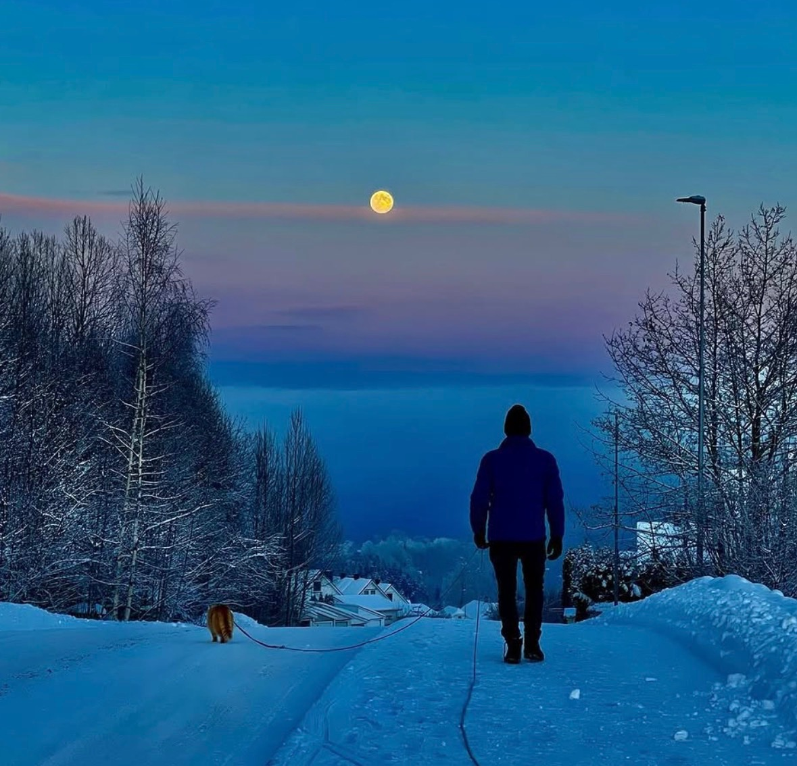
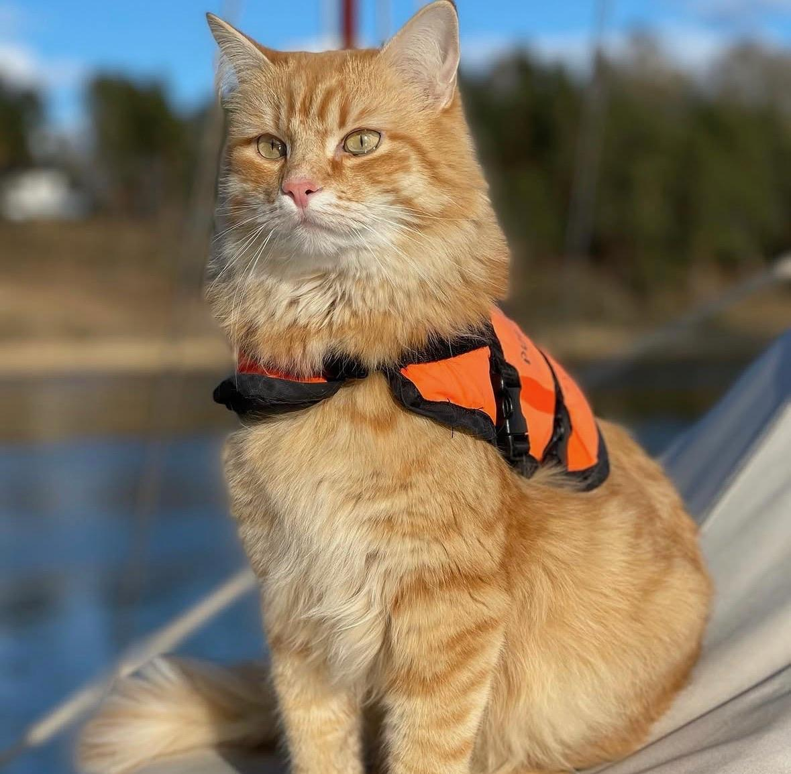
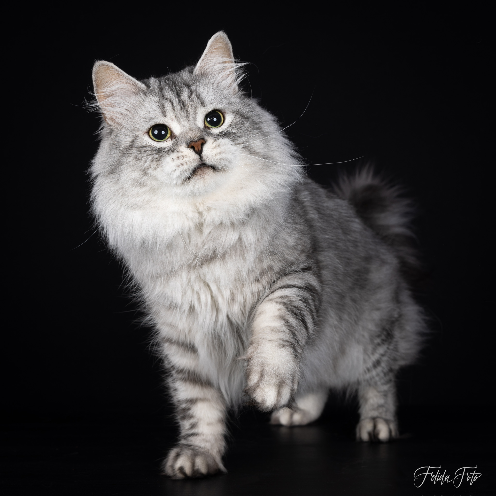
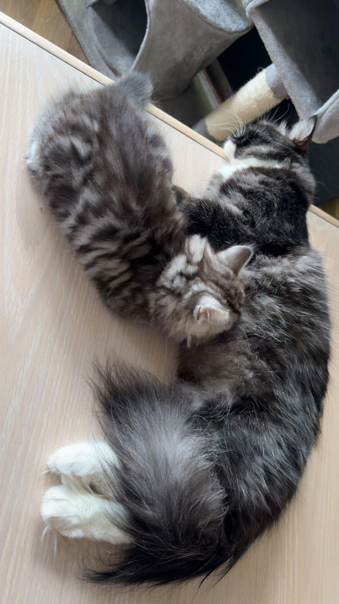

Eventyrnummeret
Pucifer på tur
Seilbåt, vinterlys, hotell, hytte og hverdagsliv med en sibirkatt som liker å være med.
Innhold
Ut i verden
En tøffere, mer magasinaktig retning for historier med bevegelse, reise og sterke bilder.
Portrett
Eventyrpusen Pucifer

Pucifer er med på det aller meste: sjø, bil, hytte, hotell og daglige turer i sele.
Han elsker spesielt godt livet på sjøen i seilbåt - med mange overnattinger i året, både innenlands og utenlands. Han har selvfølgelig sitt eget pass.
Pucifer sitter også gjerne på i kajakk eller gummibåt. Han dusjer om han har fått saltvann i pelsen, og han har den samme døgnrytmen som menneskene sine.
Hver dag får han kokt torsk til middag. På vinteren har han på seg en liten islender hvis det er kaldt på fjelltur.
"Du har jo det meste i den katten."
Fotoessay
Selen, snøen og flokken
Guide
Smart katt, trygg hverdag
Sibirkatten er intelligent, nysgjerrig og ofte svært lærevillig. Korte, positive økter gjør reiser og stell enklere.

